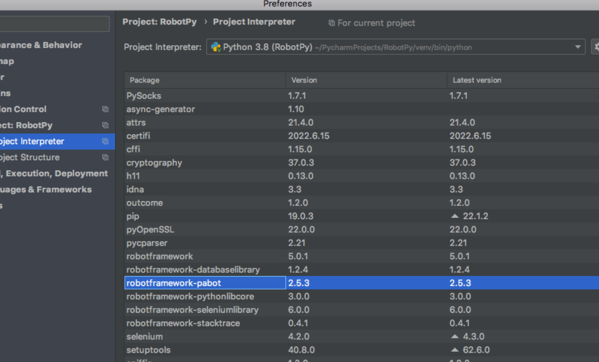

Robot : Parallel Execution : How To Perform
Step 1: Install Pabot using pip command as pip3 install -U robotframework-pabot
Step 2: In Pycharm Install robotframework-pabot See below screenshot.

Run below command for parallel execution :: Following Smoke TAG
pabot --processes 2 --outputdir Results --i Smoke testScripts/*.robot
Explaining above command below --
pabot Keyword To Run Parallel Robot Test.
--processes 2 To Run Tests In 2 Threads.
--outputdir Results To Run Test Result In Results Folder.
-i Smoke Run test cases having TAG as 'Smoke'. Here 'i' stands for Include
testScripts Directory having all .robot file.
*.robot Run All .robot files present in Directory testScripts
Run below command for parallel execution :: Run All Test Scripts
pabot --processes 2 --outputdir Results testScripts/*.robot
Explaining above command below --
pabot Keyword To Run Parallel Robot Test.
--processes 2 To Run Tests In 2 Threads.
--outputdir Results To Run Test Result In Results Folder.
testScripts Directory having all .robot file.
*.robot Run All .robot files present in Directory testScripts